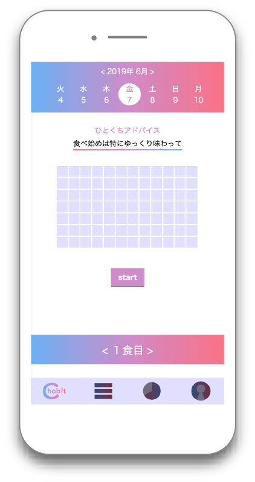

スマートフォンの場合横向きにしてご覧ください
早食いを防止するお箸
Chobit!

制作期間：2019/5〜2019/7
担当：アプリのデザイン・プロトタイプコーディング
使用言語：HTML/CSS/JS
使用ツール：Illustrator/obniz
担当：アプリのデザイン・プロトタイプコーディング
使用言語：HTML/CSS/JS
使用ツール：Illustrator/obniz
早食いを防止するお箸
Chobit!




健康に気をつけたいのについつい早食いしてしまう人をターゲットに、箸に装着するだけで１口の間隔を可視化できるプロダクトと連動アプリを制作。１口の間隔が短いと赤のマーク、適切だと青のマークが表示され、早食いのタイミングを知ることができる。
大学の実習でグループ制作で、早食いを防止する手助けができるものを制作。
普通の食事は
1. 箸の頭にプロダクトを取り付ける。
2. LEDが一口の間隔が速いと赤く、適切だと青く光る。
3. 赤く光った場合、ゆっくり食べることをもっと意識！
4. 全て食べ終えたら、連動アプリで自分の食べ方を確認。
5. 自分の食べ方の特徴から気をつけるべきタイミングを知る！
ex)「食べ始めに赤いマークがたくさん付いている！お腹が空いているときほど早食いに気をつけないと！」
プロトタイプはobniz・加速度センサー・LED・バッテリーを使用。
プロダクトで早食いをリアルタイムで注意し、アプリでは自分の食べ方を振り返る。